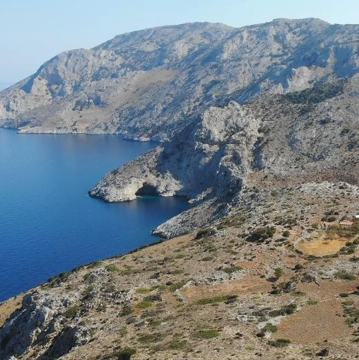
Η ΦΥΣΗ ΜΑΣ01 /
Στη φύση, με σεβασμό.
Γνωρίζουμε και προστατεύουμε τον θαλάσσιο κόσμο, τις ακτές και τα δάση του νησιού μας.
Στη θάλασσα, στο βουνό, πίσω από μια κάμερα ή δίπλα σε όποιον μας χρειάζεται. Ανακαλύπτουμε τον κόσμο ξεκινώντας από τον τόπο μας.
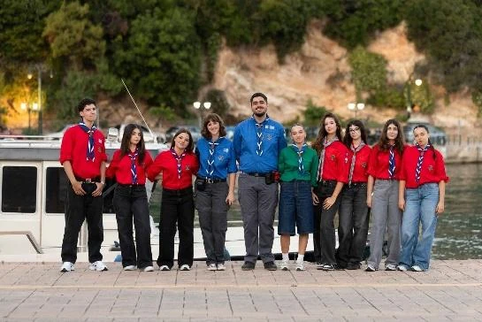
Η παρέα μας, μαζί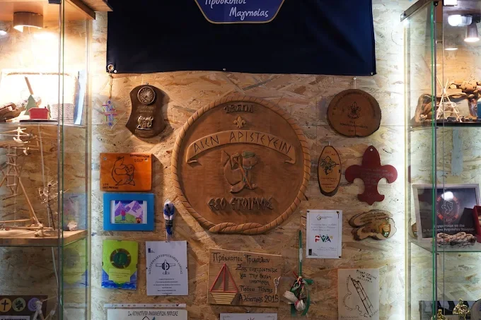
✳ΠΟΙΟΙ ΕΙΜΑΣΤΕ
Είμαστε το 1ο Σύστημα Προσκόπων Αλοννήσου. Από το 2009 μεγαλώνουμε μαζί, μαθαίνουμε μέσα από την πράξη και δίνουμε πίσω στον τόπο που αγαπάμε.
Κάθε εξόρμηση, κάθε εθελοντική δράση, κάθε μικρή ή μεγάλη δημιουργία είναι μια ευκαιρία να δοκιμάσουμε κάτι καινούριο — πάντα ως ομάδα.
✳Η ΖΩΗ ΜΑΣ ΣΕ ΔΡΑΣΗ
Από το θαλάσσιο πάρκο μέχρι τα μονοπάτια και τους δρόμους του νησιού, όπου υπάρχει μια ιδέα, υπάρχει και μια καινούρια περιπέτεια.

Η ΦΥΣΗ ΜΑΣΓνωρίζουμε και προστατεύουμε τον θαλάσσιο κόσμο, τις ακτές και τα δάση του νησιού μας.
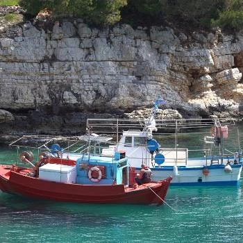
ΙΣΤΟΡΙΕΣ ΤΟΥ ΤΟΠΟΥΦτιάχνουμε ταινίες, ερευνούμε την ιστορία μας και ακούμε τους ανθρώπους που έχουν κάτι να πουν.
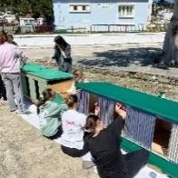
ΜΑΖΙ ΓΙΑ ΤΟ ΝΗΣΙΚαθαρισμοί, συνεργασίες, φροντίδα για ανθρώπους και ζώα: μικρές πράξεις με μεγάλο νόημα.
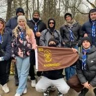
ΠΑΝΤΑ ΕΞΩΕξορμήσεις, κατασκηνώσεις, νέες δεξιότητες και φιλίες που κρατούν περισσότερο από μια διαδρομή.
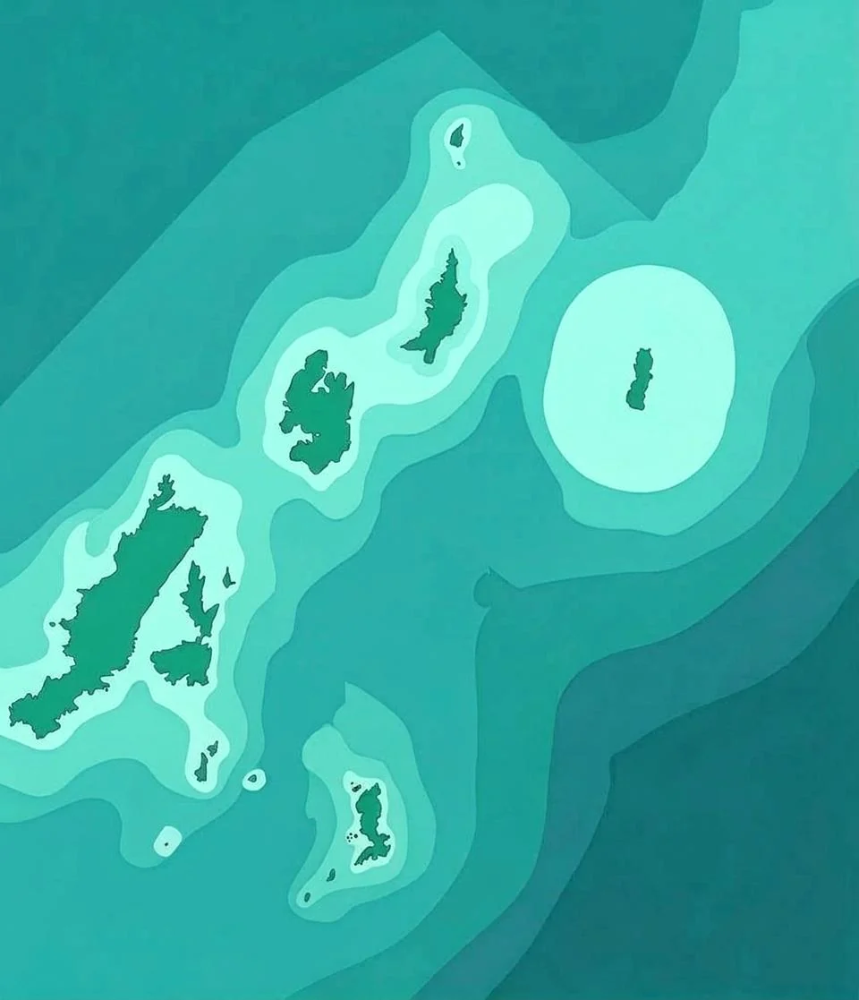
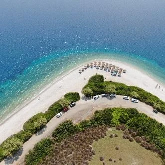
✳ΟΙ ΙΣΤΟΡΙΕΣ ΠΟΥ ΑΦΗΓΟΥΜΑΣΤΕ
Μαθαίνουμε να βλέπουμε τον τόπο μας με άλλα μάτια: μέσα από τους ανθρώπους του, τη φύση και τις ιστορίες του. Η πρώτη μας ταινία αφηγείται τον πλούτο του Εθνικού Θαλάσσιου Πάρκου Αλοννήσου και Βορείων Σποράδων.
Δες το ντοκιμαντέρ μαςΗ ΕΠΟΜΕΝΗ ΙΣΤΟΡΙΑ
Μια νέα γενιά Ανιχνευτών ερευνά την παράκτια αλιεία, μαζί με το Ίδρυμα Thalassa και τον Αλιευτικό Σύλλογο Αλοννήσου. Η νέα ταινία βρίσκεται σε δημιουργία.
✳ΜΙΚΡΟ ΗΜΕΡΟΛΟΓΙΟ
Ξεκινά η ιστορία του 1ου Συστήματος Προσκόπων Αλοννήσου.
Παρουσιάζουμε την έρευνά μας για το Υποβρύχιο Μουσείο Αλοννήσου.
Συμμετέχουμε σε πολιτιστικές συναντήσεις, κινηματογραφικές προβολές και δράσεις.
Η διήμερη εκδρομή μας γίνεται πενθήμερη, όταν ο καιρός καθυστερεί την επιστροφή.
Στην ΠΑΠΕ Τρικάλων παρουσιάζουμε έρευνα για την παράκτια αλιεία.
✳ΜΕΣΑ ΣΤΗ ΛΕΣΧΗ ΜΑΣ
Ξύλο, αναμνηστικά, ζωγραφιές, χρώματα και ιδέες. Ο χώρος μας αλλάζει μαζί μας — κάποια κομμάτια του ακόμη ετοιμάζονται.
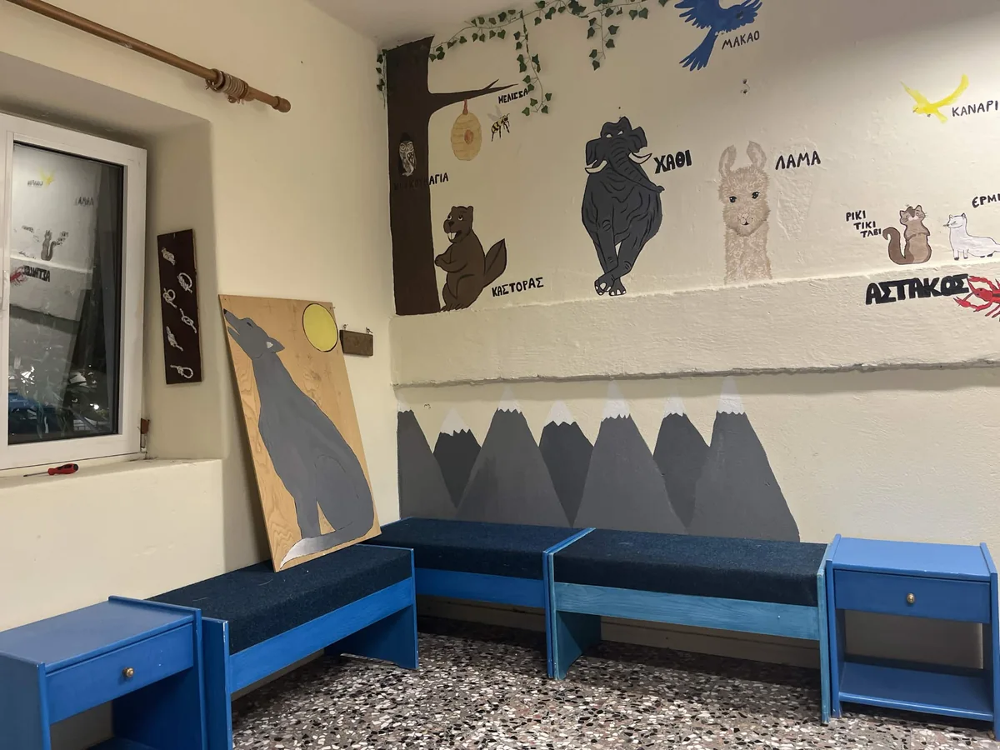
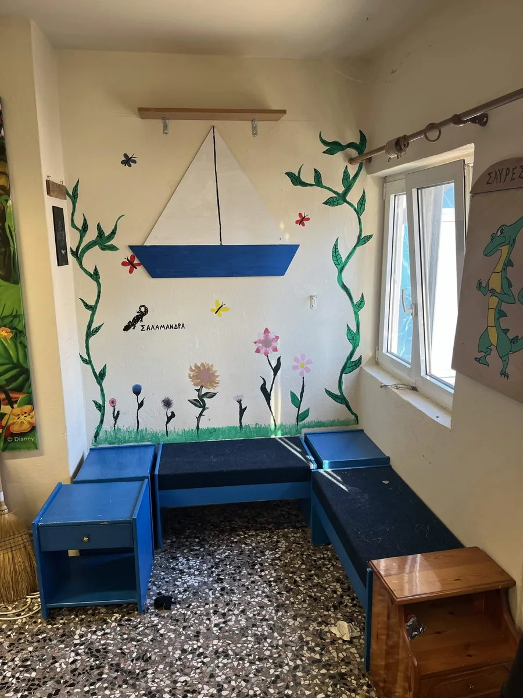
✳ΑΠΟ ΤΟΝ ΠΙΝΑΚΑ ΜΑΣ
Αφίσες, προσκλήσεις και μικρές ανακοινώσεις που σχεδιάζουμε για όσα ζούμε μαζί. Αυτές είναι δύο στιγμές από το αρχείο μας το 2026.
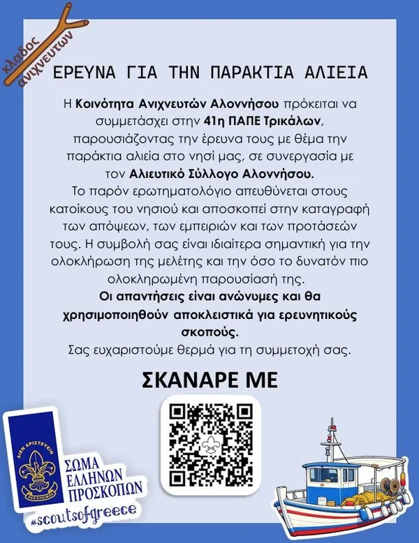
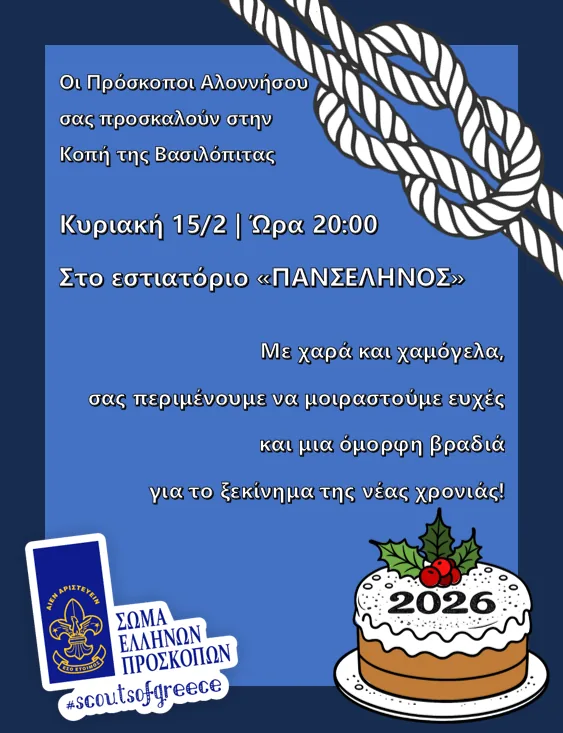
✳Η ΕΠΟΜΕΝΗ ΠΕΡΙΠΕΤΕΙΑ
Θέλεις να μάθεις περισσότερα για τους Προσκόπους της Αλοννήσου, να έρθεις στην παρέα ή να συνεργαστούμε; Στείλε μας ένα μήνυμα.
1palonnisou@sep.org.gr @scoutsofalonissos